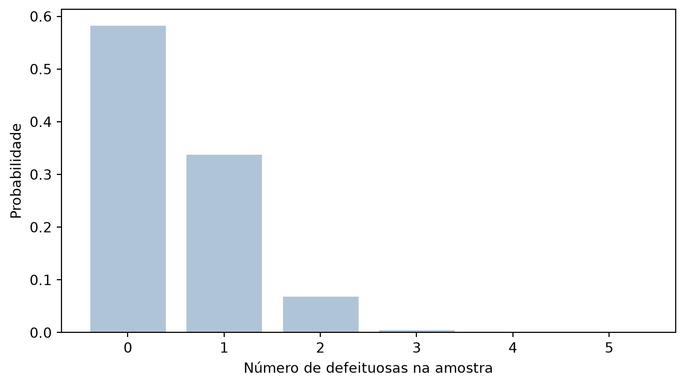

Esta seção se baseia na seção 6.6.4 de Bussab e Morettin (2023).
A binomial da seção anterior tem uma condição escondida: cada tentativa precisa ter a mesma probabilidade \(p\) de sucesso, e isso só é verdade se a composição da população não muda entre uma tentativa e a seguinte. É automático quando há reposição — lançar a mesma moeda de novo, ou sortear com devolução — mas deixa de valer no caso mais comum na prática: amostrar sem reposição de um lote finito.
Imagine um lote de \(N\) casos de teste, dos quais \(r\) escondem um bug. Ao sortear um caso e verificar que ele tem bug, o próximo sorteio já não parte da mesma proporção: sobra um bug a menos num lote um caso menor. A probabilidade de sucesso muda a cada retirada — a premissa da binomial quebra. É exatamente essa situação, amostragem sem reposição de uma população finita e dividida em dois grupos, que a distribuição hipergeométrica descreve.
A fórmula
Seja um lote com \(N\) itens, dos quais \(r\) pertencem à categoria de interesse (as “defeituosas”, os “com bug”). Ao retirar uma amostra de tamanho \(n\) sem reposição, a probabilidade de encontrar exatamente \(k\) itens da categoria de interesse é:
A leitura combinatória é direta: o numerador conta os jeitos de escolher \(k\) itens entre os \(r\) “de interesse” e, ao mesmo tempo, \(n-k\) itens entre os \(N-r\) restantes; o denominador conta todas as amostras possíveis de tamanho \(n\) dentro do lote de \(N\). É a mesma contagem “combinação sobre combinação” da seção 2.4 — só que aplicada duas vezes, uma para cada grupo, e dividida pelo total de amostras.
Controle de qualidade, transposto para software
O exemplo clássico de Bussab e Morettin (2023) é um lote de peças com algumas defeituosas. Em software, o equivalente natural é um lote de casos de teste ou de commits recentes, dos quais alguns escondem um bug: em vez de inspecionar todos (caro, demorado), sorteia-se uma amostra pequena para inspeção manual.
Um lote com \(N=100\) casos de teste tem \(r=10\) com bug conhecido. Uma amostra de \(n=5\) é sorteada para revisão, sem reposição — o mesmo caso não é revisado duas vezes.
# scipy: hypergeom(M, n, N) = (população, sucessos na população, tamanho da amostra)# livro : N=100 (lote), r=10 (defeituosas), n=5 (amostra sem reposição)lote = hypergeom(100, 10, 5)print(f"P(0 defeituosas na amostra) = {num(float(lote.pmf(0)), 3)}")print(f"P(ao menos 1 defeituosa) = {num(float(1- lote.cdf(0)), 3)}")
P(0 defeituosas na amostra) = 0,584
P(ao menos 1 defeituosa) = 0,416
A chance de a amostra sair limpa — nenhum dos 5 casos revisados esconder bug, mesmo havendo 10 no lote de 100 — é de 0,584, quase 6 em 10. Dito de outro modo, revisar apenas 5 de 100 casos deixa uma chance de 0,416 de pegar ao menos um bug — e uma chance ainda maior de a amostra passar limpa sem que o lote esteja limpo. É o risco inerente de qualquer amostragem: uma amostra pequena pode simplesmente não tocar nos casos problemáticos, por puro acaso.
AvisoNomenclatura do scipy diverge do livro
A ordem de argumentos de hypergeom na scipy não segue a ordem \(N\), \(r\), \(n\) deste livro. Na assinatura hypergeom(M, n, N) da scipy, M é o tamanho da população (o \(N\) do livro), n é o número de sucessos na população (o \(r\) do livro) e N é o tamanho da amostra (o \(n\) do livro) — os dois últimos nomes colidem de propósito com os do livro, mas trocados de posição. O comentário no chunk acima documenta o mapeamento; releia-o antes de adaptar o código para outros números.
Contraste com a binomial: a regra dos 10%
E se, em vez de casos de teste, o lote fosse amostrado com reposição — cada caso revisado e devolvido ao lote antes do próximo sorteio? Aí sim a binomial se aplicaria, com \(p = r/N = 10/100 = 0{,}1\):
Hipergeométrica (sem reposição): 0,584
Binomial (com reposição, p=0,1): 0,590
Os dois números quase coincidem: 0,584 contra 0,590, uma diferença de cerca de 1%. A explicação está no tamanho relativo da amostra: 5 casos sorteados de um lote de 100 são apenas 5% dele, então retirar um caso sem devolvê-lo quase não perturba a proporção de bugs que sobra para o próximo sorteio — a hipergeométrica e a binomial praticamente concordam.
Essa proximidade é a regra dos 10%: quando a amostra é uma fração pequena (convencionalmente, até 10%) da população, a binomial com reposição aproxima bem a hipergeométrica sem reposição, e pode substituí-la — é mais simples de calcular e de interpretar. A aproximação se degrada à medida que a amostra cresce em relação ao lote: com \(n=50\) de um lote de \(N=100\) (metade do lote, sem reposição), tirar um caso muda a composição de forma que a binomial já não capturaria, e as duas distribuições passam a divergir de verdade.
O suporte de \(k\) é restrito
Diferente da binomial, em que \(k\) varia livremente de 0 a \(n\), a hipergeométrica impõe um limite adicional: não é possível encontrar mais itens “de interesse” do que existem no lote, nem mais do que cabem na amostra. Formalmente, \(k\) só assume valores em \(\max(0, n-(N-r)) \le k \le \min(n, r)\). No exemplo do lote de 100 com 10 defeituosas e amostra de 5, isso não chama atenção porque \(r=10\) e \(n=5\) são pequenos frente a \(N\) — mas, se o lote tivesse apenas \(N=8\) itens com \(r=6\) defeituosos e a amostra fosse \(n=5\), seria impossível sortear 0 ou 1 defeituosas: sobram só 2 itens bons no lote, e uma amostra de 5 é obrigada a incluir ao menos 3 defeituosas. Ignorar essa restrição ao montar um gráfico ou uma tabela produz probabilidades zero disfarçadas de “não calculado”.
k = np.arange(0, 6)fig, ax = plt.subplots()ax.bar(k, lote.pmf(k), color="#b0c4d8", edgecolor="white")ax.set_xlabel("Número de defeituosas na amostra")ax.set_ylabel("Probabilidade")plt.tight_layout()plt.show()

Figura 18.1: Distribuição hipergeométrica: probabilidade de cada número de defeituosas numa amostra de 5, de um lote de 100 com 10 defeituosas.
No lote de 100 com 10 defeituosas, o suporte teórico de \(k\) vai de 0 a 5 (o tamanho da amostra), e a barra em \(k=0\) concentra a maior parte da massa — coerente com a amostra ser pequena frente ao lote.
A amostragem sem reposição desta seção reaparece no Capítulo 3, quando a distribuição amostral de uma estatística for calculada em populações finitas: lá, o efeito de “a retirada de uma observação muda o que resta” recebe um nome — a correção de população finita — e um ajuste explícito na fórmula do erro padrão.
Exercícios
1. Um time de QA tem 8 casos de teste críticos guardados, dos quais 3 escondem regressões introduzidas no último release. Por falta de tempo, apenas 3 desses 8 casos serão executados antes do deploy, sorteados sem reposição. Qual a probabilidade de nenhuma regressão ser pega?
DicaResposta
hypergeom(8, 3, 3).pmf(0)
O resultado é hypergeom(8, 3, 3).pmf(0) ≈ 0,179 — quase 18% de chance de o deploy seguir sem que nenhuma das 3 regressões seja detectada, mesmo revisando quase 40% do total de casos críticos (3 de 8). Note o mapeamento: hypergeom(8, 3, 3) tem população \(N=8\), \(r=3\) regressões e amostra \(n=3\) — os dois últimos argumentos coincidem numericamente aqui, mas por acaso do exemplo, não porque r e n sejam a mesma coisa.
2. Uma cientista de dados precisa decidir entre modelar uma amostragem sem reposição como hipergeométrica (exata) ou como binomial (aproximada). Em qual das duas situações a seguir a diferença entre as duas distribuições importa, e em qual ela é irrelevante? (a) Lote de 10.000 pacotes de software, 50 com uma dependência vulnerável, amostra de 20 para auditoria. (b) Lote de 12 servidores em produção, 5 com uma configuração desatualizada, amostra de 6 para migração imediata.
DicaResposta
Em (a), a amostra (20) é 0,2% do lote (10.000) — muito abaixo dos 10% da regra prática — então a binomial com \(p = 50/10000 = 0{,}005\) aproxima bem a hipergeométrica, e usar a mais simples das duas não introduz erro relevante. Em (b), a amostra (6) é metade do lote (12): a regra dos 10% está longe de valer, cada servidor retirado muda bastante a proporção que resta, e só a hipergeométrica exata dá a probabilidade correta — a binomial erraria de forma perceptível. A diferença entre as duas nunca é sobre qual “é mais certa” (a hipergeométrica sempre é exata quando não há reposição); é sobre quando a aproximação da binomial é boa o bastante para valer a simplicidade.
Bussab, Wilton de Oliveira, e Pedro Alberto Morettin. 2023. Estatística Básica. 10ª ed. Saraiva.